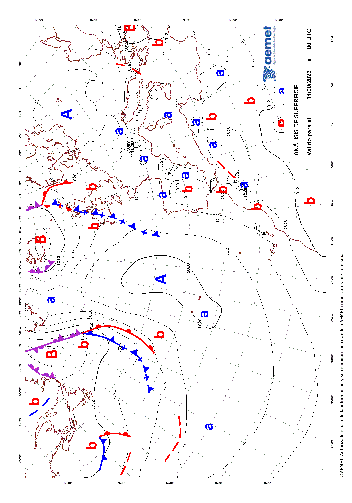

climaemet provides several functions for accessing a selection of endpoints of the AEMET API tool. However, this package does not cover in full all the capabilities of the API.
For that reason, we provide the get_data_aemet()
function, that allows to access any API endpoint freely. The drawback is
that the user would need to handle the results by him/herself.
Example: Normalized text
Some API endpoints, as predicciones-normalizadas-texto,
provides the results as plain text on natural language. These results
are not parsed by climaemet, but can be retrieved as
this:
# endpoint, today forecast
today <- "/api/prediccion/nacional/hoy"
# Metadata
knitr::kable(get_metadata_aemet(today))| unidad_generadora | descripcion | periodicidad | formato | copyright | notaLegal |
|---|---|---|---|---|---|
| Grupo Funcional de Predicción de Referencia | Predicción general nacional para hoy / mañana / pasado mañana / medio plazo (tercer y cuarto día) / tendencia (del quinto al noveno día) | Disponibilidad. Para hoy, solo se confecciona si hay cambios significativos. Para mañana y pasado mañana diaria a las 15:00 h.o.p.. Para el medio plazo diaria a las 16:00 h.o.p.. La tendencia, diaria a las 18:30 h.o.p. | ascii/txt | © AEMET. Autorizado el uso de la información y su reproducción citando a AEMET como autora de la misma. | https://www.aemet.es/es/nota_legal |
# Data
pred_today <- get_data_aemet(today)
# Produce a result
clean <- gsub("\r", "\n", pred_today, fixed = TRUE)
clean <- gsub("\n\n\n", "\n", clean, fixed = TRUE)
cat(paste("---\n\n", clean, "\n---"))AGENCIA ESTATAL DE METEOROLOGÍA PREDICCIÓN GENERAL PARA ESPAÑA DÍA 27 DE OCTUBRE DE 2025 A LAS 07:46 HORA OFICIAL PREDICCIÓN VÁLIDA PARA EL LUNES 27
A.- FENÓMENOS SIGNIFICATIVOS Probables chubascos localmente fuertes y con alguna tormenta en el suroeste peninsular. Probables rachas muy fuertes en el bajo Ebro y en cumbres centrales de Tenerife.
B.- PREDICCIÓN Se prevé un aumento de la estabilidad en el tercio norte peninsular que dejará abundante nubosidad baja matinal tendiendo a poco nuboso o despejado excepto en extremo oriental del Cantábrico y norte de Navarra donde será más persistente y con probabilidad de alguna lluvia o llovizna débil. En el centro peninsular, poco nuboso; en el tercio sur se mantiene la inestabilidad que dejará cielos muy nubosos o cubiertos con probables chubascos localmente fuertes y con alguna tormenta en el suroeste y débiles, en general, en el resto, tendiendo al final a nuboso con nubosidad baja en zonas próximas a litorales. En Canarias, predominio de nubosidad media y alta con algunas nubes bajas por la mañana.
Bancos de niebla matinales en zonas bajas del centro de Castilla y León, así como en zonas de La Mancha.
Temperaturas máximas en descenso en la costa sur de Andalucía e interiores del nordeste peninsular y en ligero a moderado ascenso en el resto de la Península y Baleares. Temperaturas mínimas en ligero descenso en el tercio sur peninsular y moderado en el resto y Baleares. En Canarias ligeros ascensos. Heladas débiles en los Pirineos, en zonas altas de la mitad norte y, localmente, en la meseta norte.
Vientos flojos en general en la Península y Baleares de componentes norte en la vertiente norte atlántica y componentes sur y este en la vertiente sur. Predominio de la componente sur en el Cantábrico. Soplará de componente este en la vertiente mediterránea desde la Comunidad Valenciana hacia el sur rolando a suroeste por la tarde. Cierzo moderado con intervalos de fuerte y probables rachas muy fuertes en el bajo Ebro y en el mar Balear; intervalos de fuerte de tramontana en Ampurdán. En Alborán flojos a moderados del este. En Canarias viento flojo del este, con predominio de brisas en las islas orientales y de oeste más intenso en las occidentales. Probables rachas localmente muy fuertes del oeste en cumbres centrales de Tenerife a partir de la tarde.
Example: Maps
AEMET also provides map data, usually on image/gif
format. One way to get this kind of data is as follows:
# Endpoint of a map
a_map <- "/api/mapasygraficos/analisis"
# Metadata
knitr::kable(get_metadata_aemet(a_map))| unidad_generadora | descripción | periodicidad | formato | copyright | notaLegal |
|---|---|---|---|---|---|
| Grupo Funcional de Jefes de Turno | Mapas de análisis de frentes en superficie | Dos veces al día, a las 02:00 y 14:00 h.o.p. en invierno y a las 03:00 y 15:00 en verano. | image/gif | © AEMET. Autorizado el uso de la información y su reproducción citando a AEMET como autora de la misma. | https://www.aemet.es/es/nota_legal |
the_map <- get_data_aemet(a_map)
# Write as gif and include it
giffile <- "example-gif.gif"
writeBin(the_map, giffile)
# Display on the vignette
knitr::include_graphics(giffile)
Example: Surface analysis map provided by AEMET